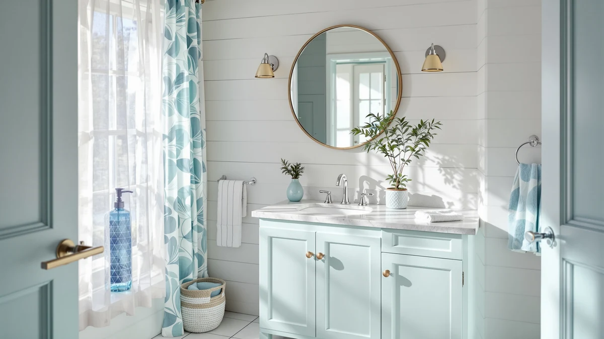

The Best Single-sink Vanity Tops (2026)
Prices and picks verified as of September 2026. Independent, reader-supported reviews.


Quick Answer
The best single-sink vanity tops balance counter space, sink configuration and price, and our top pick, the DELUXE LIVING 60 Inch Bathroom, delivers the most space of the seven vanities we compared. If a 60-inch footprint is more than your bathroom needs, the OWIPAW 36-inch runner-up and the ROOMTEC 24-inch pick cover smaller spaces at a fraction of the price.
Our pick: DELUXE LIVING 60 Inch Bathroom, $1,199.99 Check Price on Amazon
Bottom line: our top pick is the DELUXE LIVING 60 Inch Bathroom Vanity with Sink at $1,199.99. The best budget option is the ROOMTEC Bathroom Cabinet at $199.90.
Things to Know Before You Buy
- 36 inches is the most common single-sink size in this comparison. Four of the seven picks, the OWIPAW, eclife, T4TREAM and chartustriable vanities, share that width, so the decision between them usually comes down to finish rather than size.
- Sizes range from a 24-inch cabinet to a 60-inch top. The ROOMTEC 24-inch pick suits small bathrooms and powder rooms, while the DELUXE LIVING 60-inch vanity works best in a primary bathroom with room to spare. See our vanity sizing guide if you're not sure which width fits your space.
- Every pick in this guide has an integrated single sink. None of these single-sink vanity tops require you to source and install a separate basin.
- Price tracks size more closely than brand. The $199.90 to $1,199.99 spread mostly reflects cabinet width, not a premium name on the box.
- Cabinets are built from MDF and engineered wood across the board. That keeps upfront cost down compared with solid wood or stone, covered in our vanity top material guide, but it also means wiping up standing water near the sink and cabinet base promptly matters more than it would with a solid-surface top.
Finding the best single-sink vanity tops means weighing counter space, cabinet width and price against how much room your bathroom actually has to give. A single-sink layout keeps plumbing simple and works for most primary and guest bathrooms, but the right size for a compact powder room looks nothing like the right size for a spacious primary suite. We compared seven single-sink vanities across sizes from 24 inches to 60 inches so you can match the footprint to your space before you buy.
Our top pick, the DELUXE LIVING 60 Inch Bathroom, wins this comparison for buyers who want the most counter and storage space a single sink can offer, though its $1,199.99 price reflects that larger footprint. Most readers with a standard bathroom opening will find a better fit in the 36-inch runner-up from OWIPAW or one of the three other 36-inch picks, all priced under $350. If your bathroom runs smaller, the 24-inch ROOMTEC vanity is the most affordable and compact option in this guide.
Rather than repeat manufacturer marketing copy, we researched publicly listed specifications, pricing and verified owner reviews for each vanity below. None of these single-sink vanity tops were installed or used by our editorial team; every comparison here is built from documented dimensions, materials and buyer feedback, which we explain in more detail in the sections below.
Why You Should Trust Us
Ilane Tall covers home and bath products for Best Bathroom Vanities, where she researches vanities, sinks and bathroom remodel gear for a US audience. For this guide, she and the editorial team compared publicly listed specifications, pricing and verified buyer reviews for single-sink vanity tops across five sizes, from 24 inches to 60 inches, rather than repeating manufacturer marketing copy. We do not run a fake testing lab or claim to have installed any of these vanities ourselves. Instead, we cross-reference dimensions, materials and owner feedback so you can decide which size and price point fits your bathroom before you buy.
How We Picked
To build this list of the best single-sink vanity tops, we pulled every single-sink vanity-and-cabinet listing in our product database, then filtered for entries with documented dimensions, materials and pricing. We cut listings with vague or missing spec sheets that made an honest comparison impossible, and we prioritized a spread of sizes and budgets, from the $199.90 ROOMTEC 24-inch pick to the $1,199.99 DELUXE LIVING 60-inch vanity, so this guide works whether you're outfitting a small powder room or a full primary bathroom.
How We Compared
We are a research-based review site, so we compared these seven single-sink vanity tops using the specifications, pricing and verified owner reviews published for each listing rather than installing units ourselves. We lined up material, stated dimensions, sink configuration and price side by side to see where each vanity earns its cost, and we read through available owner feedback to flag recurring comments about assembly and finish quality. When a pattern shows up across multiple listings, we call it out in that pick's drawbacks below. That is the standard behind every comparison in this guide: published specifications plus a pattern in owner feedback, not a physical impression of the product.
Our Picks

DELUXE LIVING 60 Inch Bathroom
What we like
- 60-inch width gives more counter and storage space than any other pick in this comparison
- Engineered wood cabinet construction keeps the finish consistent with the other vanities on this list
- Integrated single sink means you're not sourcing a separate basin for a top this size
Flaws but not dealbreakers
- At $1,199.99, it costs more than three times the next most expensive pick in this guide
- A 60-inch footprint needs more wall space than the 36-inch and 24-inch options here, so measure your bathroom first
| Material | MDF / engineered wood |
| Size | 60 Inch |
The DELUXE LIVING 60 Inch Bathroom is our pick for the best single-sink vanity top in this comparison because it gives you the most counter and storage space of any vanity here, in an engineered wood cabinet with an integrated single sink already installed. At $1,199.99, it sits well above every other pick on this list, so it makes the most sense for a primary bathroom where a wider counter and a single large basin matter more than saving on the sticker price.
Owners researching this vanity are choosing a 60-inch footprint mainly to consolidate storage and counter space around one sink rather than split it across a double-sink layout. Because it shares the same MDF and engineered wood construction as the smaller picks in this guide, you get the same material tradeoffs at a larger scale, so plan for a wider rough opening and confirm your plumbing lines up with a single-sink configuration before you order.

OWIPAW 36" Bathroom Vanity with
What we like
- 36-inch size fits a standard vanity opening without custom cabinetry
- Comes in at well under a third of our top pick's price, at $332.49
- Integrated single sink and engineered wood cabinet match the material and configuration of the other 36-inch picks in this guide
Flaws but not dealbreakers
- At 36 inches, it offers noticeably less counter space than the 60-inch DELUXE LIVING pick above
- Priced close to three of the other 36-inch options here, so compare finishes and hardware before deciding between them
| Material | MDF / engineered wood |
| Size | 36 inch |
The OWIPAW 36" Bathroom Vanity with Sink is the runner-up among the best single-sink vanity tops because it delivers the same single-sink, engineered wood configuration as our top pick at less than a third of the price. At $332.49, it's the second-least expensive vanity in this comparison, which makes it a reasonable substitute if the DELUXE LIVING's 60-inch footprint or price doesn't fit your bathroom.
A 36-inch single-sink vanity like this one is the most common size in our comparison, with three other picks landing at the same width. Owners comparing this size range should weigh the OWIPAW against the eclife, T4TREAM and chartustriable picks below, since all four share a similar engineered wood build and single-sink configuration at a similar price point.

ROOMTEC Bathroom Cabinet 24'' Free
What we like
- Least expensive pick in this comparison at $199.90
- 24-inch width fits bathrooms too small for a standard 30-inch or 36-inch vanity
- Freestanding design gives you more placement flexibility than a wall-mounted cabinet
Flaws but not dealbreakers
- A 24-inch top offers the least counter space of any pick in this guide
- Narrower cabinets like this one typically hold less storage than the wider 36-inch and 60-inch picks here
| Material | MDF / engineered wood |
| Size | 21"D x 24"W x 34.5"H |
The ROOMTEC Bathroom Cabinet 24'' Freestanding is the most affordable single-sink vanity top in this comparison at $199.90, and its 21-inch by 24-inch by 34.5-inch footprint is built for bathrooms where a 30-inch or wider vanity simply won't fit. It's the pick to consider for a small guest bathroom, powder room or basement half bath rather than a primary bathroom.
Because it's freestanding rather than built into a wall opening, this vanity gives you more flexibility on where it sits in a small room, which matters more in tight layouts than in a spacious primary bathroom. The tradeoff for that smaller footprint and lower price is less counter and storage space than every other pick in this guide, so it works best as a single-user vanity rather than a shared one.

eclife 36" Bathroom Vanities Sink
What we like
- Integrated single sink and 36-inch width match the most common configuration in this comparison
- Engineered wood cabinet construction keeps upfront cost lower than the 60-inch DELUXE LIVING pick
- Straightforward single-sink layout makes it easy to compare directly against the OWIPAW, T4TREAM and chartustriable picks
Flaws but not dealbreakers
- At $349.99, it's priced close to, and in some cases above, other 36-inch picks in this guide, so compare finishes before choosing
- Shares the same 36-inch footprint as three other picks here, so it competes mainly on style rather than size or price
| Material | MDF / engineered wood |
| Size | 36" Single |
The eclife 36" Bathroom Vanities Sink lands in the same 36-inch, single-sink category as three other picks in this guide, with a listed price of $349.99. It's grouped here as a value-focused option for buyers who want the standard 36-inch footprint without paying the premium that comes with the 60-inch DELUXE LIVING pick.
Like the OWIPAW, T4TREAM and chartustriable vanities in this comparison, the eclife uses an MDF and engineered wood cabinet with a single integrated sink, so the deciding factor between them typically comes down to finish and style rather than size or construction. If budget is your main concern, compare the listed price against the ROOMTEC 24-inch pick above, which costs less but offers a smaller footprint.

T4TREAM 36 Inch Bathroom Vanity
What we like
- Matches the standard 36-inch single-sink footprint shared by most picks in this guide
- Engineered wood cabinet keeps material consistent with the other vanities in this comparison
- Priced the same as the eclife pick, giving you a second option at that price point
Flaws but not dealbreakers
- Offers no size advantage over the OWIPAW, eclife or chartustriable picks at a similar or lower price
- At $349.99, it costs more than the ROOMTEC 24-inch and OWIPAW 36-inch picks in this guide
| Material | MDF / engineered wood |
| Size | 36" |
The T4TREAM 36 Inch Bathroom Vanity is another 36-inch, single-sink option in this comparison, priced at $349.99, the same as the eclife pick above. It gives you a second choice at that size and price point if the eclife's finish or styling isn't what you're looking for.
Because four of the seven vanities in this guide share the same 36-inch width and single-sink configuration, the T4TREAM competes mainly on look and finish rather than function. If you've already decided on a 36-inch single-sink vanity, compare this pick's finish and hardware against the OWIPAW, eclife and chartustriable options before choosing.

chartustriable 36 Inch Bathroom Vanity
What we like
- 36-inch single-sink configuration matches the most common size in this comparison
- Engineered wood cabinet construction keeps it consistent with the other 36-inch picks
- Priced the same as the eclife and T4TREAM picks, giving you a third option at that price
Flaws but not dealbreakers
- No size or price advantage over the OWIPAW, eclife or T4TREAM picks
- At $349.99, it's more expensive than the ROOMTEC 24-inch and OWIPAW 36-inch picks in this guide
| Material | MDF / engineered wood |
| Size | 36 Inch |
The chartustriable 36 Inch Bathroom Vanity rounds out the group of four 36-inch single-sink vanities in this comparison, priced at $349.99 alongside the eclife and T4TREAM picks. It's included here to give you a third finish option at the most common size and price point in this guide.
With four vanities sharing the same 36-inch, single-sink layout and engineered wood construction, the decision between the chartustriable, eclife, T4TREAM and OWIPAW picks comes down to finish and style rather than function. If none of those finishes match your bathroom, the CITTANEO pick below offers a black sink for more contrast at a similar size.

CITTANEO 36" Bathroom Vanity with
What we like
- Black integrated sink offers more visual contrast than the white sinks on the other picks in this guide
- 36-inch width matches the most common size in this comparison
- Engineered wood cabinet construction is consistent with the rest of the lineup
Flaws but not dealbreakers
- At $414.99, it's the second-most expensive pick in this guide after the 60-inch DELUXE LIVING vanity
- Costs roughly $65 to $80 more than the other 36-inch single-sink picks here
| Material | MDF / engineered wood |
| Size | 36 Inch / Black Sink |
The CITTANEO 36" Bathroom Vanity with a black sink is the pick in this comparison for buyers who want more visual contrast than the white or light-colored sinks on the other 36-inch options. At $414.99, it costs more than the OWIPAW, eclife, T4TREAM and chartustriable picks, but it's still less than half the price of the 60-inch DELUXE LIVING vanity.
If a black sink fits your bathroom's color scheme better than a white one, the CITTANEO is the only pick in this guide that offers it, which justifies the higher price over the other 36-inch, single-sink options. Outside of the sink color and price, it shares the same 36-inch footprint and engineered wood construction as the OWIPAW, eclife, T4TREAM and chartustriable picks above.
Quick Comparison
Here's how all seven single-sink vanity tops in this comparison stack up on material, price and best use.
| Product | Material | Price | Rating | Best for | Get it |
|---|---|---|---|---|---|
| DELUXE LIVING 60 Inch Bathroom | MDF / engineered wood | $1,199.99 | 4 | Primary bathrooms needing max counter space | View on Amazon → |
| OWIPAW 36" Bathroom Vanity with | MDF / engineered wood | $332.49 | 4 | Standard 36-inch openings on a budget | View on Amazon → |
| ROOMTEC Bathroom Cabinet 24'' Free | MDF / engineered wood | $199.90 | 4 | Small bathrooms and powder rooms | View on Amazon → |
| eclife 36" Bathroom Vanities Sink | MDF / engineered wood | $349.99 | 4 | Straightforward 36-inch single-sink replacement | View on Amazon → |
| T4TREAM 36 Inch Bathroom Vanity | MDF / engineered wood | $349.99 | 4 | A second 36-inch option at the same price | View on Amazon → |
| chartustriable 36 Inch Bathroom Vanity | MDF / engineered wood | $349.99 | 4 | A third 36-inch finish option | View on Amazon → |
| CITTANEO 36" Bathroom Vanity with | MDF / engineered wood | $414.99 | 4 | Buyers who want a black sink | View on Amazon → |
The Competition
Several single-sink vanity tops didn't make our final list. Listings without a documented material, dimension or price were out, since incomplete specifications make it impossible to compare fairly against the seven vanities above. Double-sink vanities were also excluded, since this guide covers single-sink vanity tops specifically; see our best double-sink vanity tops guide for those options. Cabinet-only listings sold without an integrated sink didn't make the cut either, because that combination doesn't answer what most readers researching a single-sink vanity top with a sink already installed are asking. Of the seven picks that remain, the DELUXE LIVING 60 Inch Bathroom is still the strongest option for a primary bathroom, with the ROOMTEC and OWIPAW picks covering the smaller end of the size range.